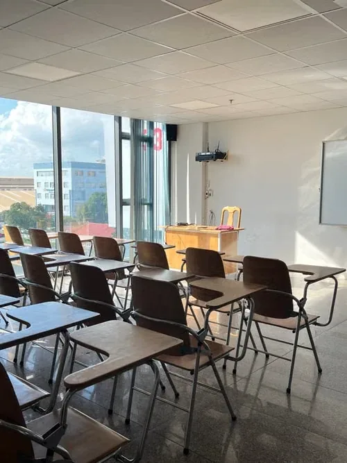
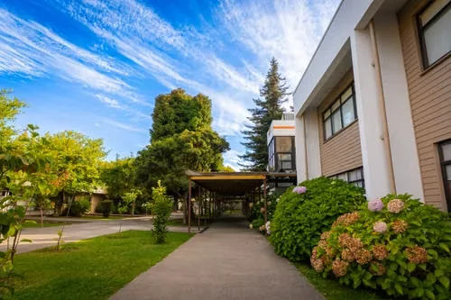
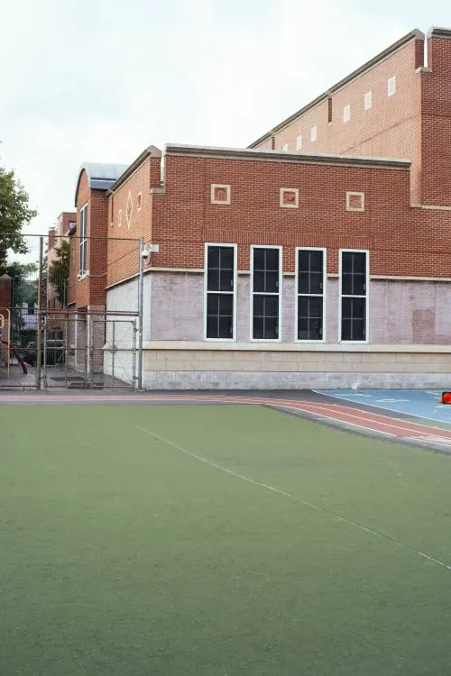

Infantil
Juego, rutinas y mucho movimiento para descubrir el mundo con seguridad.
- Aulas de 1 y 2 años
- Inglés desde el primer curso
- Periodo de adaptación flexible
Acompañamos a cada alumno desde sus primeros pasos hasta la universidad, con grupos pequeños, un proyecto plurilingüe y familias que forman parte del día a día.
Jornada de puertas abiertas:
Un colegio donde cada alumno tiene nombre propio.
Etapas educativas
Educación Infantil, Primaria, ESO y Bachillerato en un solo campus. Cada etapa va a su ritmo, pero en todas se aprende haciendo, se piensa en voz alta y se cuida de los demás.
Juego, rutinas y mucho movimiento para descubrir el mundo con seguridad.
Buena base en lectura, matemáticas y ciencias, con proyectos que mezclan asignaturas.
Más autonomía y pensamiento crítico, con un tutor cerca en una etapa que pesa.
Preparación seria para la PAU y ayuda para decidir qué estudiar después.
Calculadora de curso · 2027–2028
Elige su año de nacimiento. En España el curso se asigna por año natural, así que el mes da igual.
Curso 2027–2028
1º de Primaria
Le quedan 12 cursos con nosotros hasta la universidad.
Reservar visita para PrimariaProyecto educativo
Pedimos esfuerzo y cuidamos lo emocional a partes iguales. Los alumnos investigan, debaten, crean y presentan su trabajo, y aprenden que equivocarse forma parte de aprender.

Inglés en todas las etapas y francés o alemán desde 5º de Primaria.
Laboratorio, programación y robótica dentro del horario de clase.
Coro, teatro y artes plásticas para expresarse y trabajar en equipo.
Educación emocional, deporte todos los días y un equipo de orientación propio.
Servicios


Menús de temporada, cocinados cada día en el colegio y adaptados a alergias e intolerancias.
Acogida desde las 7:30 y actividades por la tarde hasta las 18:00.
Autobuses por Pozuelo, Aravaca, Majadahonda y Boadilla, con monitor en cada ruta.
Deporte, música, idiomas y ajedrez sin salir del colegio.
Admisiones curso 2027–2028
Plazo de solicitud: del al . Te acompañamos en todo el proceso.
Iniciar solicitudRecorre las instalaciones con nuestro equipo y pregunta todo lo que quieras.
Una conversación con dirección para conocernos.
Entrega la documentación y reserva la plaza para el nuevo curso.
Preguntas frecuentes
¿Tienes otra duda? Llámanos al 91 351 27 40 y te lo contamos.
Desde 1 año, en el Aula de 1 año de Infantil, y hasta 2º de Bachillerato. El curso se asigna por año de nacimiento, no por meses.
Es un colegio privado, laico y bilingüe. Las cuotas cambian según la etapa y te las explicamos en la visita, junto con las becas y los descuentos para hermanos.
Del 11 de enero al 26 de febrero de 2027. Puedes visitar el colegio antes, en la jornada de puertas abiertas del 14 de noviembre o en una visita individual.
Sí. Hay rutas por Pozuelo, Aravaca, Majadahonda y Boadilla, con monitor en cada autobús, y comedor con cocina propia y menús para alergias e intolerancias.
Las clases van de 9:00 a 16:30 en Primaria, ESO y Bachillerato, y de 9:00 a 16:00 en Infantil. Hay acogida desde las 7:30 y actividades hasta las 18:00.
Contacto
Déjanos tus datos y te llamamos para organizar una visita. Estamos en Pozuelo de Alarcón, a 15 minutos del centro de Madrid.
Camino de la Alborada, 12
28223 Pozuelo de Alarcón, Madrid
Secretaría: de lunes a viernes, de 8:30 a 17:00